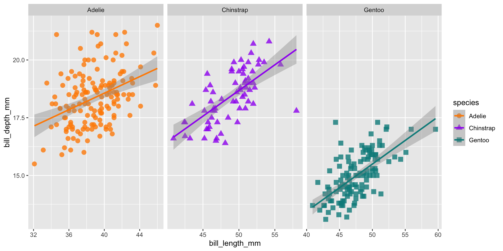

Graphics
R Foundations Course
November 21, 2022
Boxplots

Histogram/Density

Scatterplots

Linear model diagnostic fits

Cake!

Image credit: Tanya Shapiro
Initiate with data
Package is ggplot2 but function is ggplot()

Add aesthetics

Add points
Layers are added with + (not %>% or |>)

Careful what goes in aes()


Add a colour scale

Facets


ggplot(data = penguins,
aes(x = bill_length_mm,
y = bill_depth_mm,
group = species)) +
geom_point(aes(color = species,
shape = species),
size = 3,
alpha = 0.8) +
geom_smooth(method = "lm", aes(color = species)) +
scale_color_manual(values = c("darkorange","purple","cyan4")) +
facet_wrap(~species, scales = "free_x")Histogram

Density

Scatterplot with vectors

Parts of a gt table